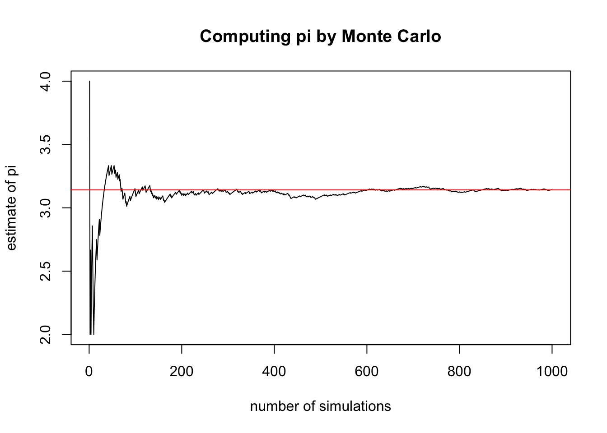
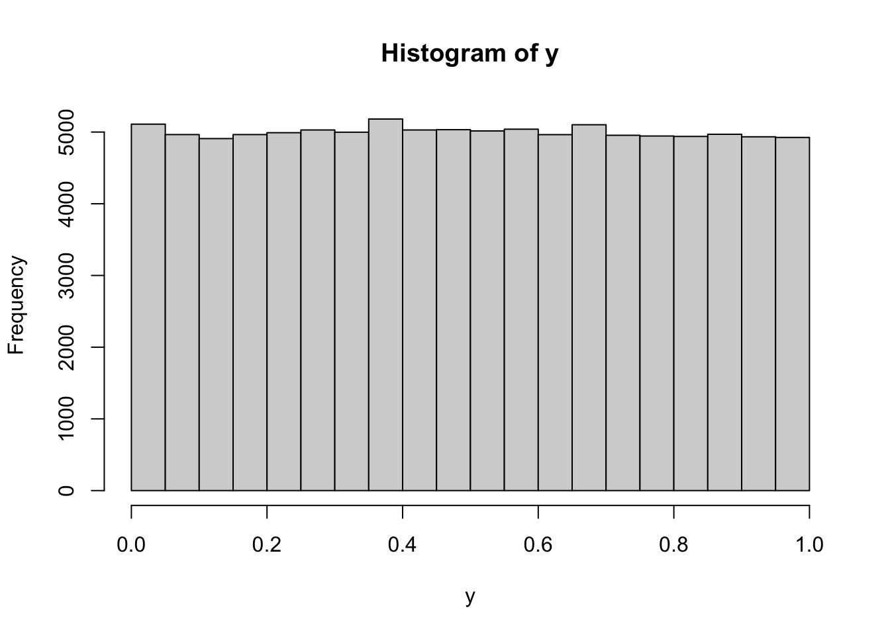
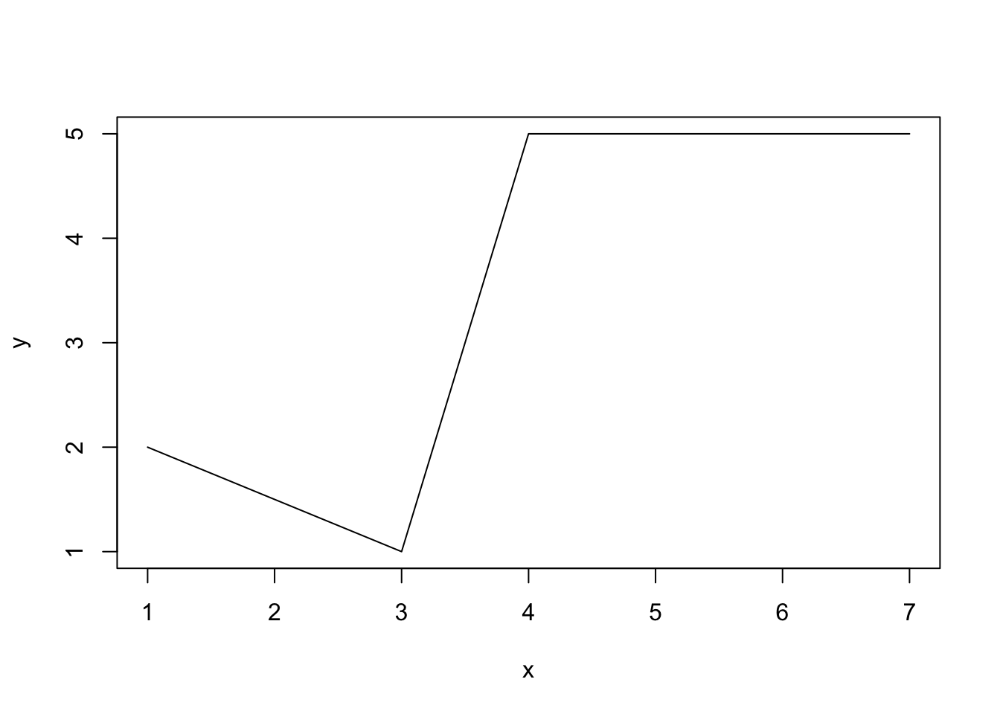

Chapter 2 Simulation of Random Variables and Monte Carlo
In the spirit of “learn by doing”, these lecture notes contain many “Problems”. Those with solutions usually introduce new concepts and feature a Comments section right after the solution. These comments are subdivided into R and Math comments focusing on the computational or conceptual features, respectively. Note that you are not expected to be able to do the solved problems before reading their solutions and comments, so don’t worry if you cannot. It is a good practice to try, though. Problems which are left unsolved, however, do not feature any new ideas and are there to help you practice the skills presented before.
2.1 Simulation of some common probability distributions
… where we also review some probability along the way.
Solution:
rgeom(50, prob = 0.4)
## [1] 1 0 3 4 1 2 0 0 2 2 0 1 5 0 1 0 2 1 1 0 2 2 2 1 0 0 1 3 2 2 1 1 1 3 5 0 1 1
## [39] 0 0 0 1 2 0 1 1 1 0 1 0Comments
R: R makes it very easy to simulate draws from a large class of named distributions3, such as geometric, binomial, uniform, normal, etc. For a list of all available distributions, run help("distributions") Each available distribution has an R name; the uniform is unif the normal is norm and the binomial is binom, etc. If you want to simulate \(n\) draws (aka a sample of size \(n\)) from a distribution, you form a full command by appending the letter r to its R name and use \(n\) as an argument. That is how we arrived to rgeom(50) in the solution above. The additional arguments of the function rgeom have to do with the parameters of that distribution. Which parameters go with which distributions, and how to input them as arguments to rgeom or rnorm is best looked up in R’s extensive documentation. Try help("rnorm"), for example.
Math: You could spend your whole life trying to understand what it really means to “simulate” or “generate” a random number. The numbers you obtain from so-called random number generators (RNG) are never random. In fact, they are completely deterministically generated. Still, sequences of numbers obtained from (good) random number generators share so many properties with sequences of mythical truly random numbers, that we can use them as if they are truly random. For the purposes of this class, you can assume that the numbers R gives you as random are random enough. Random number generation is a fascinating topic at the intersection of number theory, probability, statistics, computer science and even philosophy, but we do not have the time to cover any of it in this class. If you want to read a story about a particularly bad random number generator, go here.
You might have encountered a geometric distribution before. A random variable with that distribution can take any positive integer value or \(0\), i.e., its support is \({\mathbb{N}}_0=\{0,1,2,3,\dots\}\). As you can see from the output above, the value \(0\) appears more often than the value \(3\), and the value \(23\) does not appear at all in this particular simulation run. The probability of seeing the value \(k\in \{0,1,2,3,\dots\}\) as a result of a single draw is given by \((1-p)^k p\), where \(p\) is called the parameter of the distribution. That corresponds to the following interpretation of the geometric distribution: keep tossing a biased coin (with probability \(p\) of obtaining H) until you see the first H; the number Ts before that is that value your geometric random variable. If we put these probabilities in a single table (and choose \(p=0.4\), for example) it is going to look like this:
| 0 | 1 | 2 | 3 | 4 | 5 | 6 | 7 | … | |
|---|---|---|---|---|---|---|---|---|---|
| Prob. | 0.4 | 0.24 | 0.144 | 0.086 | 0.052 | 0.031 | 0.019 | 0.011 | … |
Of course, the possible values our random variable can take do not stop at \(7\). In fact, there are infinitely many possible values, but we do not have infinite space. Note that even though the value \(23\) does not appear in the output of the command rgeom above, it probably would if we simulated many more than \(50\) values. Let’s try it with \(500\) draws - the table blow counts how many \(0s\), \(1s\), \(2s\), etc. we got:
| 0 | 1 | 2 | 3 | 4 | 5 | 6 | 7 | 8 | 9 | 10 |
|---|---|---|---|---|---|---|---|---|---|---|
| 208 | 132 | 62 | 43 | 23 | 16 | 8 | 3 | 2 | 1 | 2 |
Still no luck, but we do observe values above 5 more often. By trial and error, we arrive at about \(1,000,000\) as the required number of simulations:
| 0 | 1 | 2 | 3 | … | 23 | 24 | 25 | 26 |
|---|---|---|---|---|---|---|---|---|
| 400616 | 238946 | 144274 | 86489 | … | 3 | 3 | 3 | 3 |
Solution: First, we compute the probability that the value seen in a single draw does not exceed \(22\):
Different draws are independent of each other, so we need to raise this to the power \(1,000,000\).
Comments:
R. The command we used here is pgeom which is a cousin of rgeom. In general, R commands that involve named probability distributions consist of two parts. The prefix, i.e., the initial letter (p in this case) stands for the operation you want to perform, and the rest is the R name of the distribution. There are 4 prefixes, and the commands they produce are
| Prefix | Description |
|---|---|
r |
Simulate random draws from the distribution. |
p |
Compute the cumulative probability distribution function (cdf) (NOT pdf) |
d |
Compute the probability density (pdf) or the probability mass function (pmf) |
q |
Compute the quantile function |
(see the Math section below for the reminder of what these things are). In this problem, we are dealing with a geometric random variable \(X\), which has a discrete distribution with support \(0,1,2,3,\dots\). Therefore, the R name is geom. We are interested in the probability \({\mathbb{P}}[ X\leq 22]\), which corresponds to the cdf of \(X\) at \(x=22\), so we use the
the prefix p. Finally, we used the named parameter p and gave it the value p = 0.4, because the geometric distribution has a single parameter \(p\).
This problem also gives us a chance to discuss precision. As you can see, the probability of a single draw not exceeding \(22\) is very close to \(1\). In fact, it is equal to it to 5 decimal places. By default, R displays 7 significant digits of a number. That is enough for most applications (and barely enough for this one), but sometimes we need more. For example, let’s try to compute the probability of seeing no T (tails) in 10 tosses of a biased coin, where the probability of H (heads) is 0.9.
While very close to it, this probability is clearly not equal to \(1\), as suggested by the output above.
The culprit is the default precision. We can increase the precision (up to \(22\) digits) using the options command
Precision issues like this one should not appear in this course, but they will out there “in the wild”, so it might be a good idea to be aware of them.
Math. If you forgot all about pdfs, cdfs and such things here is a little reminder:
| cdf | \(F(x) = {\mathbb{P}}[X\leq x]\) |
| \(f(x)\) such that \({\mathbb{P}}[X \in [a,b]] = \int_a^b f(x) \, dx\) for all \(a<b\) | |
| pmf | \(p(x)\) such that \({\mathbb{P}}[X=a_n] = p(a_n)\) for some sequence \(a_n\) |
| qf | \(q(p)\) is a number such that \({\mathbb{P}}[ X \leq q(p)] = p\) |
Those random variables that admit a pdf are called continuous. The prime examples are the normal, or the exponential distribution. The ones where a pmf exists are called discrete. The sequence \(a_n\) covers all values that such a, discrete, random variable can take. Most often, \(a_n\) either covers the set of all natural numbers \(0,1,2,\dots\) or a finite subset such as \(1,2,3,4,5,6\).
Coming back to our original problem, we note that the probability we obtained is quite small. Since \(1/0.000372\) is about \(2690\), we would have to run about \(2690\) rounds of \(1,000,000\) simulations before the largest number falls below \(23\).
Solution:
qnorm(c(0.05, 0.1, 0.4, 0.6, 0.95), mean = 1, sd = 2)
## [1] -2.2897073 -1.5631031 0.4933058 1.5066942 4.2897073R. The function we used is qnorm, with the prefix q which computes the quantile function and the R name norm because we are looking for the quantiles of the normal distribution. The additional (named) parameters are where the parameters of the distribution come in (the mean and the standard variation) in this case. Note how we plugged in the entire vector c(0.05, 0.1, 0.4, 0.6, 0.98) instead of a single value into qnorm. You can do that because this function is vectorized. That means that if you give it a vector as an argument, it will “apply itself” to each component of the vector separately, and return the vector of results. Many (but not all) functions in R are vectorized4.
As a sanity check, let’s apply pnrom (which computes the cdf of the normal) to these quantile values:
p = qnorm(c(0.05, 0.1, 0.4, 0.6, 0.95), mean = 1, sd = 2)
pnorm(p, mean = 1, sd = 2)
## [1] 0.05 0.10 0.40 0.60 0.95As expected, we got the original values back - the normal quantile function and its cdf are inverses of each other.
Math. Computing the cdf of a standard normal is the same thing reading a normal table. Computing a quantile is the opposite; you go into the middle of the table and find your value, and then figure out which “Z” would give you that value.
Solution:
sample(1:10, 60, replace = TRUE)
## [1] 2 8 9 8 4 7 7 7 2 3 3 10 6 1 9 7 4 7 6 2 2 3 10 1 9
## [26] 7 3 2 8 4 1 2 8 1 4 9 1 9 10 10 6 1 8 6 1 10 5 1 6 9
## [51] 8 3 8 9 4 6 1 6 7 8Comments:
Math. Let \(X\) denote the outcome of a single throw of a fair \(10\)-sided die. The distribution of \(X\) is discrete (it can only take the values \(1,2,\dots, 10\)) but it is not one of the more famous named distributions. I guess you could call it a discrete uniform on \(\{1,2,\dots, 10\}\), but a better way to describe such distribution is by a distribution table, which is really just a list of possible values a random variable can take, together with their, respective, probabilities. In this case,
| 1 | 2 | 3 | 4 | 5 | 6 | 7 | 8 | 9 | 10 |
|---|---|---|---|---|---|---|---|---|---|
| 0.1 | 0.1 | 0.1 | 0.1 | 0.1 | 0.1 | 0.1 | 0.1 | 0.1 | 0.1 |
R. The command used to draw a sample from a (finite) collection is, of, course sample. The first argument is a vector, and it contains the “bag” from which you are drawing. If we are interested in repeated, random samples, we also need to specify replace = FALSE otherwise, you could draw any single number at most once:
With more than 10 draws, we would run out of numbers to draw:
sample(1:10, 12, replace = FALSE)
## Error in sample.int(length(x), size, replace, prob): cannot take a sample larger than the population when 'replace = FALSE'The bag you draw from can contain objects other than numbers:
sample(c("Picard", "Data", "Geordi"), 9, replace = TRUE)
## [1] "Picard" "Data" "Geordi" "Geordi" "Data" "Data" "Picard" "Data"
## [9] "Geordi"sample command to produce a weighted sample, too. For example, if we wanted to simulate \(10\) draws from the following distribution
| 1 | 2 | 3 |
|---|---|---|
| 0.2 | 0.7 | 0.1 |
we would use the additional argument prob:
Note how it is mostly \(2\)s, as expected.
Solution:


 Comments:
Comments:
R. It cannot be simpler! You use the command hist, feed it a vector of values, and it produces a histogram. It will even label the axes for you. If you want to learn how to tweak various features of your histogram, type ?hist.
Math. Mathematically, histogram can be produced for any (finite) sequence of numbers: we divide the range into several bins, count how many of the points in the sequence falls into each bin, and then draw a bar above that bin whose height is equal (or proportional to) that count. The picture tells use about how the sequence we started from is “distributed”. The order of the points does not matter - you would get exactly the same picture if you sorted the points first. If the sequence of points you draw the histogram of comes from, say, normal distribution, the histogram will resemble the shape of the pdf of a normal distribution. I say resemble, because its shape is ultimately random. If the number of points is small (like in the second part of this problem) the histogram may look nothing like the normal pdf. However, when the number of points gets larger and larger, the shape of the histogram gets closer and closer to the underlying pdf (if it exists). I keep writing “shape” because the three histograms above have very different scales on the \(y\) axis. That is because we used counts to set the vertical sizes of bins.
A more natural choice is to use the proportions, i.e. relative frequencies (i.e. counts divided by the total number of points) for bar heights. In R, we would need to add the additional option freq = FALSE to hist:

Note how the \(y\)-axes label changed from “Frequency” to “Density”. With such a normalization, the histogram of \(x\) can be directly compared to the probability density of a normal distribution. Here is a histogram of \(100,000\) simulations from our normal distribution with its density function (pdf) superimposed:
 This is also a good time to review some basic facts about the normal distribution (family). As you know, it a family continuous distributions parameterized by two parameters, namely \(\mu \in (-\infty,\infty)\) and \(\sigma>0\). Given \(\mu\) and \(\sigma\), the pdf takes the following familiar form (which you should never try to memorize):
\[ f(x) = \frac{1}{\sigma \sqrt{2\pi}} e^{-\tfrac{(x-\mu)^2}{2 \sigma^2}}.\]
The special case \(\mu=0,\sigma=1\) corresponds to a standard normal, and that is the distribution you find in normal tables. The normal CDF is given by
\[ F(x) = \int_{-\infty}^{x} \frac{1}{\sigma \sqrt{2\pi}} e^{-\tfrac{(x-\mu)^2}{2 \sigma^2}}\, dx\]
but it does not have a closed-form expression. That does not mean it does not exists. It simply means that we cannot write it using a neat formula. We can still compute its values; just use the command
This is also a good time to review some basic facts about the normal distribution (family). As you know, it a family continuous distributions parameterized by two parameters, namely \(\mu \in (-\infty,\infty)\) and \(\sigma>0\). Given \(\mu\) and \(\sigma\), the pdf takes the following familiar form (which you should never try to memorize):
\[ f(x) = \frac{1}{\sigma \sqrt{2\pi}} e^{-\tfrac{(x-\mu)^2}{2 \sigma^2}}.\]
The special case \(\mu=0,\sigma=1\) corresponds to a standard normal, and that is the distribution you find in normal tables. The normal CDF is given by
\[ F(x) = \int_{-\infty}^{x} \frac{1}{\sigma \sqrt{2\pi}} e^{-\tfrac{(x-\mu)^2}{2 \sigma^2}}\, dx\]
but it does not have a closed-form expression. That does not mean it does not exists. It simply means that we cannot write it using a neat formula. We can still compute its values; just use the command pnorm.
2.2 Monte Carlo
Solution:
For an exponential random variable with parameter \(\lambda\), the expected value is \(1/\lambda\); in this case \(0.25\). The error made was 0.072023 for \(n=10\) simulations. We increase the number of simulations to \(n=1000\) and get a better result
with (smaller) error -0.0064643. Finally, let’s try \(n=1,000,000\):
The error is even smaller -0.00038101.
This can be obtained quite easily by integration (by parts): \[ {\mathbb{E}}[X] = \int_{-\infty}^{\infty} x f(x)\, dx = \int_0^{\infty} x \lambda e^{-\lambda x}\, dx = \tfrac{1}{\lambda}\]
Comments:
R. The only new thing here is the command mean which computes the mean of vector.
Math. There is a lot going on here conceptually. This is the first time we used the Monte Carlo method. It is an incredibly method, as you will keep being reminded throughout this class. The idea behind it is simple, and it is based on the Law of large numbers:
Theorem Let \(X_1,X_2, \dots\) be an independent sequence of random variables with the same distribution, for which the expected value can be computed. Then
\[ \tfrac{1}{n} \Big( X_1+X_2+\dots+X_n\Big) \to {\mathbb{E}}[X_1] \text{ as } n\to\infty\]
The idea behind Monte Carlo is to turn this theorem “upside down”. The goal is to compute \({\mathbb{E}}[X_1]\), and uses a supply of random numbers, each of which comes from the same distribution to accomplish that. The random number generator inside rexp gives us a supply of numbers (stored in the vector x) and all we have to do is compute their average. This gives us the left-hand side of the formula above, and, if \(n\) is large enough, we hope that the this average does not differ too much from its theoretical limit. As \(n\) gets larger, we expect better and better results. That is why your error above gets smaller as \(n\) increases.
It looks like Monte Carlo can only be used to compute the expected value of a random variable, which does not seem like such a bit deal. It is! You will see in the sequel that almost anything can be written as the expected value of some random variable.
Solution. When \(X\) is standard normal \(Y=X^2\) has a \(\chi^2\) distribution with one degree of freedom:
In the second case, we do not know the distribution of \(X^2\), but can still do the following:
Comments:
Math+R. We are asked to compute \({\mathbb{E}}[ X^2]\), which can be interpreted in two ways. First, we can think of \(Y=X^2\) as a random variable in its own and try to take draws from the distribution of \(Y\). In the case of the normal distribution, the distribution of \(Y\) is known - it happens to be a \(\chi^2\)-distribution with a single degree of freedom (don’t worry if you never heard of it). We can simulate it in R by using its R name chisq and
get a number close to the exact value of \(1\).
The case of a geometric distribution is seemingly more difficult, because we do not know what the distribution of \(Y=X^2\) is and there is no corresponding R name to put the prefix r in front of. What makes the simulation possible is the fact that \(Y\) is a transformation of
a random variable we know how to simulate. In that case, we simply simulate the required number of draws x from the geometric distribution (using rgeom) and then apply the transformation \(x \mapsto x^2\) to the result. The transformed vector y is then nothing but the sequence of draws from the distribution of \(X^2\). Btw, we could have done the same thing in the case of the normal random variable, too - there was no need to recognize its square as a \(\chi^2\) random variable:
The idea described above is one of main advantages of the Monte Carlo technique: if you know how to simulated a random variable, you also know how to simulated any (deterministic) function of it. That fact will come into its own a bit later when we start working with several random variables and stochastic processes, but it can be very helpful even in the case of a single random variable, as you will see in the next problem.
Solution: The estimated probability:
The exact probability:
The error is -0.0013353.
Comments:
R. In R, the symbol > is an operation, which returns a Boolean (TRUE or FALSE) value. For example:
It works with vectors, too, but now the output is a vector of Boolean values:
You can even compare a vector and a scalar:
Therefore, the vectory in the solution is a vector of length \(100000\) whose elements are either TRUE or FALSE; here are the first 5 rows of the “spreadsheet” (called a data frame or a tibble in R) with columns x and y from our solution:
| x | y |
|---|---|
| 1.9493 | FALSE |
| -1.1015 | TRUE |
| 1.0448 | TRUE |
| -0.1384 | TRUE |
| -0.2573 | TRUE |
Finally, z contains the mean of y. How do you compute a mean of Boolean values? In R (and many other languages) TRUE and FALSE have default numerical values, usually \(1\) and \(0\). This way, when \(R\) is asked to compute the sum of a Boolean vector it will effectively count the number of values which are TRUE. Similarly, the mean is the relative proportion of TRUE values.
| 0 | 1 |
|---|---|
| 1-p | p |
for some \(p \in [0,1]\). The parameter \(p\) is nothing but the probability \({\mathbb{P}}[Y=1]\).
So why did we decide to transform \(X\) into \(Y\)? Because of the following simple fact: \[ {\mathbb{E}}[ Y] = 1 \times p + 0 \times (1-p) = p.\] The expected value of an indicator is the probability \(p\), and we know that we can use Monte Carlo whenever we can express the quantity we are computing as an expected value of a random variable we know how to simulate.
Solution.
nsim = 1e+06
x = runif(nsim, -1, 1)
y = runif(nsim, -1, 1)
z = (x^2 + y^2) < 1
(pi_est = 4 * mean(z))
## [1] 3.141728
(err = pi_est - pi)
## [1] 0.0001353464Since we know the “exact” value of \(\pi\), we can compute the error {r} format(err, digits=5).
Comments.:
Math.
 As we learned in the previous problem, probabilities of events can be computed using Monte Carlo, as long as we know how to simulate the underlying indicator random variable. In this case, we want to compute \(\pi\), so we would need to find a “situation” in which the probability of something is \(\pi\). Of course, \(\pi>1\), so it cannot be a probability of anything, but \(\pi/4\) can, and computing \(\pi/4\) is as useful as computing \(\pi\). To create the required probabilistic “situation” we think of the geometric meaning of \(\pi\), and come up with the following scheme. Let \(X\) and \(Y\) be two independent uniform random variables each with values between \(-1\) and \(1\). We can think of the pair \((X,Y)\) as a random point in the square \([-1,1]\times [-1,1]\). This point will sometimes fall inside the unit circle, and sometimes it will not. What is the probability of hitting the circle? Well, since \((X,Y)\) is uniformly distributed everywhere inside the square, this probability should be equal to the portion of the area of our square which belongs to the unit circle. The area of the square is \(4\) and the area of the circle is \(\pi\), so the required probability is \(\pi/4\). Using the idea from the previous problem, we define the indicator random variable \(Z\) as follows
\[ Z = \begin{cases} 1 & (X,Y) \text{ is inside the unit circle, } \\ 0 & \text{ otherwise.}
\end{cases}
= \begin{cases} 1& X^2+Y^2 < 1, \\ 0 & \text{ otherwise.} \end{cases}\]
As we learned in the previous problem, probabilities of events can be computed using Monte Carlo, as long as we know how to simulate the underlying indicator random variable. In this case, we want to compute \(\pi\), so we would need to find a “situation” in which the probability of something is \(\pi\). Of course, \(\pi>1\), so it cannot be a probability of anything, but \(\pi/4\) can, and computing \(\pi/4\) is as useful as computing \(\pi\). To create the required probabilistic “situation” we think of the geometric meaning of \(\pi\), and come up with the following scheme. Let \(X\) and \(Y\) be two independent uniform random variables each with values between \(-1\) and \(1\). We can think of the pair \((X,Y)\) as a random point in the square \([-1,1]\times [-1,1]\). This point will sometimes fall inside the unit circle, and sometimes it will not. What is the probability of hitting the circle? Well, since \((X,Y)\) is uniformly distributed everywhere inside the square, this probability should be equal to the portion of the area of our square which belongs to the unit circle. The area of the square is \(4\) and the area of the circle is \(\pi\), so the required probability is \(\pi/4\). Using the idea from the previous problem, we define the indicator random variable \(Z\) as follows
\[ Z = \begin{cases} 1 & (X,Y) \text{ is inside the unit circle, } \\ 0 & \text{ otherwise.}
\end{cases}
= \begin{cases} 1& X^2+Y^2 < 1, \\ 0 & \text{ otherwise.} \end{cases}\]
Problem 2.10 1. Write an R function cumavg which computes the sequence of running averages of a vector, i.e., if the input is \(x=(x_1,x_2,x_3,\dots, x_n)\), the output should be
\[ \Big(x_1, \frac{1}{2} (x_1+x_2), \frac{1}{3}(x_1+x_2+x_3), \dots, \frac{1}{n} (x_1+x_2+\dots+x_n)\Big).\] Test it to check that it really works.
- Apply
cumavgto the vector \(4 z\) from the previous problem and plot your results (use a smaller value fornsim. Maybe \(1000\).) Plot the values against their index. Add a read horizontal line at the level \(\pi\). Rerun the same code (including the simulation part) several times.
Solution
cumavg = function(x) {
c = cumsum(x)
n = 1:length(x)
return(c/n)
}
x = c(1, 3, 5, 3, 3, 9)
cumavg(x)
## [1] 1 2 3 3 3 4nsim = 1000
x = runif(nsim, -1, 1)
y = runif(nsim, -1, 1)
z = (x^2 + y^2) < 1
pi_est = cumavg(4 * z)
plot(1:nsim, pi_est, type = "l", xlab = "number of simulations", ylab = "estimate of pi",
main = "Computing pi by Monte Carlo")
abline(pi, 0, col = "red")
Comments:
R.
Part 1: The function cumavg can be written in many ways; the one in the solution is sleek because it does not use any for loops. It is also faster than the other two implementations below. It relies on the fact that many natural operations in R are already vectorized. The builtin function cumsum performs most of the work - once we have partial sums, we simply need to divide each one of them by the index of its position in the vector. If you wanted to use for loops and not rely on the function cumsum, you could write something like this:
cumavg = function(x) {
out = numeric(length(x))
for (i in 1:length(x)) {
p = 0
for (j in 1:i) {
p = p + x[j]
}
out[i] = p/i
}
return(out)
}The statement out = numeric(length(x)) is there to ask R to reserve enough room (memory) for a numeric vector the same size as x. It is not necessary, but it is a good idea to get into the habit of doing it because is makes your code both faster and easier to read.
Here is another way, using the sum function:
cumavg = function(x) {
out = numeric(0)
for (i in 1:length(x)) {
out = c(out, sum(x[1:i])/i)
}
return(out)
}The line out = c(out, sum(x[1:i]) / i) appends the value sum(x[1:i]) / i to the end of the vector out. Note that x[1:i] is the vector x indexed by the sequence 1:i (i.e., 1,2,...,i), which is nothing other than the vector containing the first i elements of x. We also “pre-declared” the vector out in the statement `out = numeric(0)’. This time we only made sure that out is an empty numerical vector because of the way we build it incrementally. This is, in general, not a very efficient way of doing things, but it will do just fine for small vectors.
Part 2. This course is not about R graphics, but I think it is a good idea to teach you how to make basic plots in R. This is what the functions plot and abline (and some others) do. I have already mentioned the fact that R has a number of high-quality graphics packages (like ggplot2), but the builtin R graphics is certainly good enough for “quick-and-dirty” plots.
The main purpose of the function plot is to plot scatterplots:

The corresponding entries of vectors x and y are paired (into \((1,2)\), \((3,1)\), \((4,5)\) and \((7,5)\) in this case) and these pairs are used as coordinates of points. By default, each point is marked by a small circle, but this, and many other things, can be adjusted by numerous additional arguments. One of such arguments is type which determines the type of the plot. We used type="l" which tells R to join the points with straight lines:

The other arguments, xlab, ylab and main determine labels for axes and the entire plot. The function abline(a,b) adds a line \(y = a x + b\) to an already existing plot. It is very useful in statistics if one wants to show the regression line superimposed on the scatterplot of data. Finally, the argument col, of course, determines the color of the line. To learn about various graphical parameters, type ?par.
Math.
The conceptual reason for this exercise is to explore (numerically) the kinds of errors we make when we use Monte Carlo. Unlike the deterministic numerical procedures, Monte Carlo has a strange property that no bound on the error can be made with absolute certainty. Let me give you an example. Suppose that you have a biased coin, with the probability \(0.6\) of heads and \(0.4\) of tails. You don’t know this probability, and use a Monte Carlo technique to estimate it - you toss your coin \(1000\) times and record the number of times you observe \(H\). The law of large numbers suggests that the relative frequency of heads is close to the true probability of \(H\). Indeed, you run a simulation
set.seed(1234)
x = sample(c("T", "H"), 1000, prob = c(0.4, 0.6), replace = TRUE)
y = x == "H"
mean(y)
## [1] 0.594and get a pretty accurate estimate of \(0.594\). If you run the same code a few more times, you will get different estimates, but all of them will be close to \(0.6\). Theoretically, however, your simulation could have yielded \(1000\) Hs, which would lead you to report \(p=1\) as the Monte-Carlo estimate. The point is that even though such disasters are theoretically possible, they are exceedingly unlikely. The probability of getting all \(H\) in \(1000\) tosses of this coin is a number with more than \(500\) zeros after the decimal point.
The take-home message is that even though there are no guarantees, Monte Carlo performs well vast majority of the time. The crucial ingredient, however, is the number of simulations. The plot you were asked to make illustrates exactly that. The function cumavg gives you a whole sequence of Monte-Carlo estimates of the same thing (the number \(\pi\)) with different numbers of simulations nsim. For small values of nsim the error is typically very large (and very random). As the number of simulations grows, the situations stabilizes and the error decreases. Without going into the theory behind it, let me only mention is that in the majority of practical applications we have the following relationship:
\[ error \sim \frac{1}{\sqrt{n}}.\]
In words, if you want to double the precision, you need to quadruple the number of simulations. If you want an extra digit in your estimate, you need to multiply the number of simulations by \(100\). Instead of going further into the theory, here is an image where I superimposed \(40\) plots like the one you were asked to produce (the red lines are \(\pm \frac{4}{\sqrt{n}}\)):

2.3 Conditional probability and independence.
Solution:
nsim = 1e+05
X = rgeom(nsim, prob = 0.5)
Y = rgeom(nsim, prob = 0.5)
Z = X + Y
X_cond = X[Z == 5]
mean(X_cond == 3)
## [1] 0.1690112We have \[ {\mathbb{P}}[ X = 3 | Z= 5 ] = \frac{{\mathbb{P}}[ X=3 \text{ and }Z=5]}{{\mathbb{P}}[Z=5]} = \frac{{\mathbb{P}}[X=3 \text{ and }Y = 2]}{{\mathbb{P}}[Z=5]} \] Since \(X\) and \(Y\) are independent, we have \({\mathbb{P}}[ X=3 \text{ and }Y=2 ] = {\mathbb{P}}[X=3] {\mathbb{P}}[ Y=2] = 2^{-4} 2^{-3} = 2^{-7}\). To compute \({\mathbb{P}}[ Z = 5]\) we need to split the event \(\{ Z = 5 \}\) into events we know how to deal with. Since \(Z\) is built from \(X\) and \(Y\), we write \[ \begin{align} {\mathbb{P}}[ Z = 5 ] = &{\mathbb{P}}[X=0 \text{ and }Y=5]+ {\mathbb{P}}[ X=1 \text{ and }Y=4] + {\mathbb{P}}[ X=2 \text{ and }Y=3] + \\ & {\mathbb{P}}[ X=3 \text{ and }Y=2] + {\mathbb{P}}[ X=4 \text{ and }Y=1] + {\mathbb{P}}[ X = 5 \text{ and }Y=0]. \end{align}\] Each of the individual probabilities in the sum above is \(2^{-7}\), so \({\mathbb{P}}[ X = 3 | Z = 5] = \frac{1}{6}\). This gives us an error of 0.0023445.
Comments:
Math. Let us, first, recall what the conditional probability is. The definition we learn in the probability class is the following \[ {\mathbb{P}}[A | B] = \frac{{\mathbb{P}}[A \text{ and }B]}{{\mathbb{P}}[B]}\], as long as \({\mathbb{P}}[B]>0\). The interpretation is that \({\mathbb{P}}[A|B]\) is still the probability of \(A\), but now in the world where \(B\) is guaranteed to happen. Conditioning usually happens when we receive new information. If someone tells us that \(B\) happened, we can disregard everything in the complement of \(B\) and adjust our probability to account for that fact. First we remove from \(A\) anything that belongs to the complement of \(B\), and recompute the probability \({\mathbb{P}}[A \cap B]\). We also have to divide by \({\mathbb{P}}[B]\) because we want the total probability to be equal to \(1\).
Our code starts as usual, but simulating \(X\) and \(Y\) from the required distribution, and constructing a new vector \(Z\) as their sum. The variable X_cond is new; we build it from \(X\) by removing all the elements whose corresponding \(Z\) is not equal to \(5\). This is an example of what is sometimes called the rejection method in simulation. We simply “reject” all simulations which do not satisfy the condition we are conditioning on. We can think of X_cond as bunch of simulations of \(X\), but in the world where \(Z=5\) is guaranteed to happen. Once we have X_cond, we proceed as usual by computing the relative frequency of the value \(3\) among all possible values \(X\) can take. Note that the same X_cond can also be used to compute the conditional probability \({\mathbb{P}}[ X=1| Z=5]\). In fact, X_cond contains the information about the entire conditional distribution of \(X\) given \(Z=5\); if we draw a histogram of X_cond, we will get a good idea of what this distribution looks like:
 The histogram above suggests that the distribution of \(X\), given \(Z=5\), is uniform on \(\{0,1,2,3,4,5\}\). It is - a calculation almost identical to the one we performed above gives that \({\mathbb{P}}[ X= i| Z=5] = \frac{1}{6}\) for each \(i=0,1,2,3,4,5\).
The histogram above suggests that the distribution of \(X\), given \(Z=5\), is uniform on \(\{0,1,2,3,4,5\}\). It is - a calculation almost identical to the one we performed above gives that \({\mathbb{P}}[ X= i| Z=5] = \frac{1}{6}\) for each \(i=0,1,2,3,4,5\).
2.4 Additional Problems
Problem 2.12
Simulate \(n=10000\) draws from the Weibull distribution with shape parameter \(2\) and scale parameter \(3\). Draw a histogram of your simulations.
Suppose that the vector
xcontains \(n=1000\) simulations from the standard normal \(\mu=0, \sigma=1)\). Without simulating any new random numbers, transform it into the vectorysuch thatyis a vector of \(n=1000\) simulations from the normal with \(\mu=3\) and \(\sigma=2\). Draw histograms of bothxandy.Starting with
x=seq(-3,3,by=0.1), define the appropriate vectoryand usexandyto plot the graph of the cdf of the standard normal. The command you want to use isplotwith the following extra argumentstype="l"(to get a smooth line instead of a bunch of points).main="The CDF of the standard normal"(to set the title), and- another argument (which you must look up youself) that will set the \(y\)-axis label to \(F(x)\).
Problem 2.13
Simulate \(n=1000\) draws from the distribution whose distribution table is given by
2
4
8
16
0.2
0.3
0.1
0.4
and plot their histogram.
You may have learned in probability how to compute the pdf \(f_Y(y)\) of a transformation \(Y=g(X)\) of a random variable with pdf \(f_X(x)\). Suppose that you forgot how to do that, but have access to \(10,000\) simulations from \(X\). How would you get an approximate idea about the shape of the function \(f_Y\)?
More concretely, take \(X\) to be exponentially distributed with parameter \(1\) and \(g(x) = \sin(x)\) and produce a picture that approximates the pdf \(f_Y\) of \(Y\). (Note: even if you remember how to do this analytically, you will run into a difficulty. The function \(\sin(x)\) is not one-to-one and the method usually taught in probability classes will not apply. If you learned how to do it even in the case \(g(x)= \sin(x)\), kudos to your instructor!)
Let \(X\) be a random variable with the Cauchy distribution, and \(Y = \operatorname{arctan}(X)\). R allows you to simulate from the Cauchy distribution, even if you do not really know what it is. How would you use that to make an educated guess as to what the distribution of \(Y\) is? To make your life easier, consider \(\tfrac{2}{\pi} Y\) first.
⬇︎ In case you were wondering, the text below ⬇︎ belongs to footnotes from somewhere high above.⬇︎
There are infinitely many ways random variables can be distributed. Indeed, in the discrete \({\mathbb N}\)-valued case only, any sequence of nonnegative numbers \((p_n)_n\) such that \(\sum_n p_n=1\) defines a probability distribution. It turns out, however, that a small-ish number of distributions appear in nature much more often then the rest. These distributions, like the normal, uniform, exponential, binomial, etc. turn out to be so important that they each get a name (hence named distributions). ↩︎
The function
sumadds up all the components of the vector. You would not such a function to be vectorized. If it were, it would return exactly the same vector it got as input.↩︎